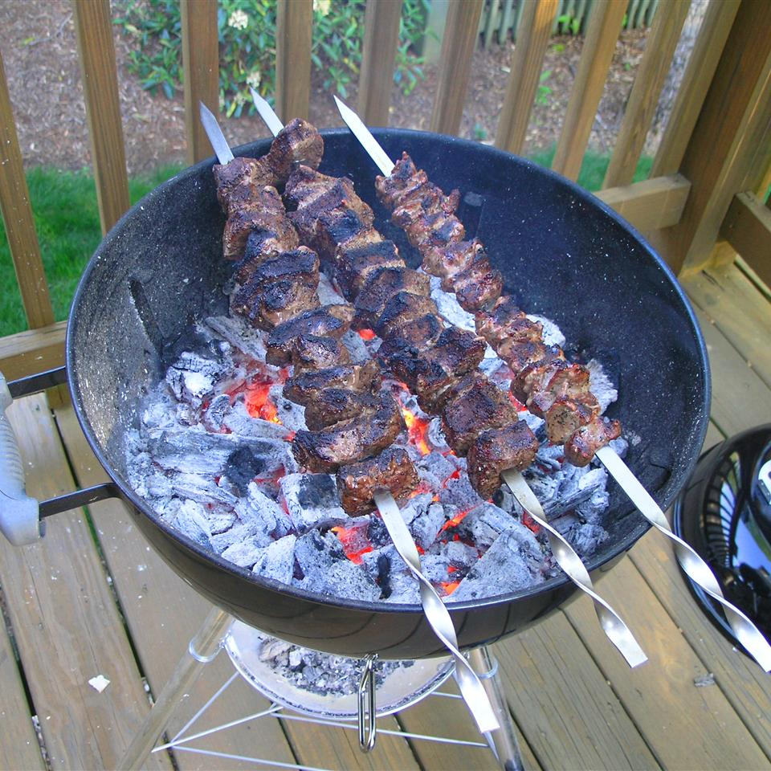

Armenian Shish Kebab

Nutrition Facts
Per Serving: 384 calories; protein 19.7g; carbohydrates 11.8g; fat 29.3g; cholesterol 61.5mg; sodium 101.3mg.
Ingredients
- 1 cup olive oil
- 2 tablespoons fresh lemon juice
- 1 teaspoon dry white wine
- 1 tablespoon minced garlic
- 1 of 8 teaspoon salt
- 1 of 8 teaspoon black pepper
- 1 of 8 teaspoon dried oregano
- 1 of 8 teaspoon dried rosemary leaves
- 1 bay leaf
- 2 pounds boneless leg of lamb, cut into half-inch cubes
- 2 large onions, peeled, cut into 8 wedges each
- 2 large green bell peppers, cut into 8 wedges each
- 12 mushrooms, stems removed
- 2 large tomatoes, cut into 8 wedges
Directions
-
Step 1
Per Serving: 384 calories; protein 19.7g; carbohydrates 11.8g; fat 29.3g; cholesterol 61.5mg; sodium 101.3mg.
-
Step 2
Position oven rack to its top setting and set oven to broil.
-
Step 3
Remove lamb from marinade and thread onto metal skewers; reserve marinade. Thread onion wedges, green peppers, and mushrooms onto separate metal skewers. Brush vegetables with reserved marinade.
-
Step 4
Broil the skewers on a broiler pan, turning frequently. Cook onions for 12 minutes, lamb for 10 minutes, green pepper for 7 minutes, and the mushrooms for 3 minutes. Remove from oven, and allow to cool until cool enough to handle.
-
Step 5
Remove skewers from ingredients and set aside. Reassemble skewers, alternating lamb, onions, green peppers, mushrooms, and tomatoes. Place onto broiler pan and brush again with marinade. Discard remaining marinade.
-
Step 6
Broil skewers again to finish cooking, turning frequently until the lamb is medium-rare and the vegetables begin to blacken in spots, 5 to 7 minutes.
Back to main page...